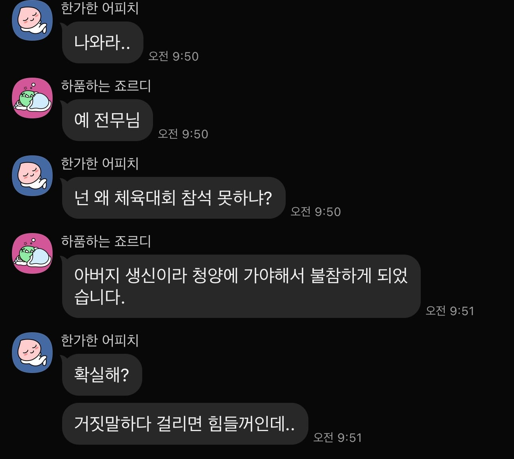

진실인지는 몰라도 불참하려는 사원
강제하는 전무
주말이라 더 그런것도 있는데..

진실인지는 몰라도 불참하려는 사원
강제하는 전무
주말이라 더 그런것도 있는데..
ㅈ소는 직급이 소꿉놀이기때문에 전무가 저 지랄하면 걍 박으면 됨 ㅇㅇ
이야 ㅋㅋㅋ
에이스인가 보네
ㅈ소가 체육대회도함?
규모는 좀 됨
근데왜주말에함
뭐야 본인얘기였어??
집안일이 먼저지 아버지까지 나왔으면 그냥 알았다 하면되지 걸리면 힘들다는 뭔 개씹소리여
즈그 아들이 회사 체육대회 때문에 가족행사 참석 못한다고 하면 빽빽댈 새끼가ㅋㅋ
자기 자신이 보기에도, 이 회사 아니면 어디에서 받아줄 재능이나 인맥(관리)이 없기에
그냥 저 회사에서 암같은 존재 처럼 붙어있고 나이들다 보니
전무라는거 달아줬드마
기고만장해진 사람일듯ㅇㅇ
주말 체육대회는 ㄹㅇ 총살감인데
개드립행 왔으면 여기저기퍼가서 조만간 전무가 보겠네 ㅋㅋ 다음거도 좀
사람들이 ㅈ소를 안가려는 이유가 저딴 푸대접때문인데, 아직도 노오오오오력 거리는 병신들은 도대체...
주말체육대회는 십 ㅋㅋ
애미잃었나
주말 체육대회는 씹